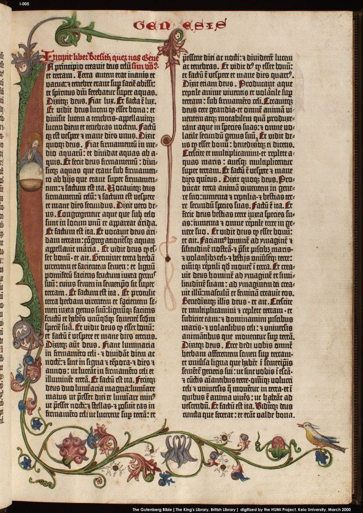

Društveni i kulturni kontekst Gutenbergova doba ključan je za razumijevanje utjecaja njegovog izuma pokretnih tiskarskih strojeva na društvo i kulturu tog vremena. Evo nekoliko važnih elemenata društvenog i kulturnog konteksta u Gutenbergovu dobu:
Feudalizam: U Europi tog razdoblja prevladavao je feudalni sustav, s plemićima i seljacima. Gutenbergov izum utjecao je na širenje znanja i informacija izvan elitnih krugova, doprinoseći postupnom slabljenju feudalnih struktura.
Trgovina i ekonomske promjene: Gutenbergov izum podržao je rast knjižne trgovine, stvarajući novi ekonomski sektor. Knjige su postale predmet trgovine, što je potaknulo ekonomske promjene, uključujući razvoj knjižara i tržišta knjiga.
Razvoj znanosti: Tiskom knjiga olakšano je dijeljenje znanstvenih spoznaja, potičući razvoj znanosti i razmjenu ideja među znanstvenicima. Ova razmjena doprinijela je razvoju europske znanosti.
Širenje pismenosti: Tiskane knjige postale su pristupačnije široj populaciji. To je potaknulo širenje pismenosti, jer su ljudi imali veću mogućnost pristupa različitim vrstama informacija.
Razvoj tiskarske industrije i trgovine knjigama tijekom Gutenbergova doba imao je značajan utjecaj na širenje znanja, obrazovanje i kulturni razvoj. Evo nekoliko ključnih aspekata tog razvoja:
Johannes Gutenberg izumio je pokretne tiskarske strojeve oko 1440. godine. Ovaj izum omogućio je brže i jeftinije reproduciranje teksta, zamjenjujući ručno pisanje knjiga i pergamenta.
Pokretni tiskarski strojevi sastavljeni od pojedinačnih slova omogućili su lakše sastavljanje i brže tiskanje velikog broja kopija knjiga.
Tiskanje knjiga omogućilo je masovnu proizvodnju tekstova. Umjesto ručnog kopiranja, knjige su mogle biti reproducirane u velikim količinama, čime su postale pristupačnije širem krugu ljudi.
Ovaj razvoj potaknuo je širenje obrazovanja i pismenosti, jer su knjige postale dostupne ne samo plemićima i svećenicima, već i srednjem sloju društva.
S razvojem tiskane industrije, stvorila se potreba za distribucijom i prodajom knjiga. Razvila se knjižna trgovina kao zasebna industrija.
Knjižare su postale ključna mjesta gdje su ljudi mogli kupiti i razmjenjivati knjige. Ove trgovine postale su središtima kulturne i intelektualne razmjene.
Tiskane knjige doprinijele su standardizaciji jezika i pravopisa. Kako su knjige postale masovno dostupne, ljudi su počeli koristiti isti jezik i pravopis, što je pridonijelo jezičnoj jednoobličenosti.
Gutenbergovo naslijeđe u književnosti ima dubok i dugoročan utjecaj na razvoj književnosti, oblikovanje kulturne baštine i transformaciju načina na koji ljudi pristupaju doživljavaju pisane riječi. Evo nekoliko ključnih elemenata Gutenbergovog naslijeđa u književnosti:
Gutenbergov izum pokretnih tiskarskih strojeva omogućio je brže i jeftinije tiskanje knjiga. To je rezultiralo većom dostupnošću knjiga širem društvu.
Povećana dostupnost knjiga potaknula je rast čitateljstva i omogućila ljudima da pristupe raznovrsnim književnim djelima.
Tiskane knjige pridonijele su standardizaciji jezika. Kako su knjige postale masovno dostupne, jezik je postao stabilniji, što je utjecalo na razvoj književnosti na standardiziranom jeziku.
Tiskane knjige omogućile su kulturnu razmjenu između različitih regija i zemalja. Ideje, mitovi i književni radovi mogli su se lako širiti i utjecati na raznolikost književnih tradicija.
Gutenberg i razvoj jezika su međusobno povezani na nekoliko važnih načina tijekom povijesti. Gutenbergova tiskarska revolucija, koja je uključivala izum pokretnih tiskarskih slova, ostavila je dubok i trajan utjecaj na razvoj jezika. Evo nekoliko ključnih aspekata koji ilustriraju taj utjecaj:
Prije Gutenbergova izuma, knjige su se često ručno prepisivale, a svaki prepisivač mogao je imati svoj vlastiti pravopis i jezične varijacije. Tiskanje knjiga omogućilo je postizanje veće konzistentnosti u pravopisu i gramatici.
Kroz masovnu proizvodnju knjiga, tiskane riječi postale su standardizirane, doprinoseći standardizaciji jezika unutar određenih zajednica.
Tiskane knjige omogućile su brže širenje standardnog jezika. Standardizirane knjige mogle su se lako reproducirati i distribuirati širom regija, doprinoseći širenju standardnog jezika izvan lokalnih dijalekata.
Gutenbergova tiskarska revolucija omogućila je širenje informacija na širem području. To je potaknulo razvoj jezične kulture jer su ljudi mogli pristupiti raznovrsnim tekstovima, uključujući i one koji su bili na standardiziranom jeziku.
